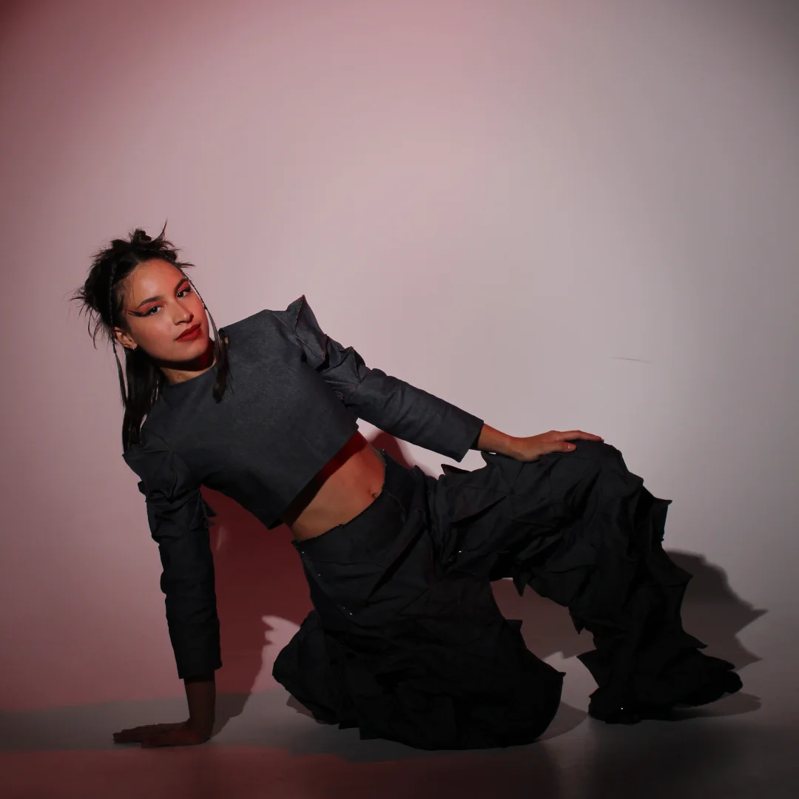
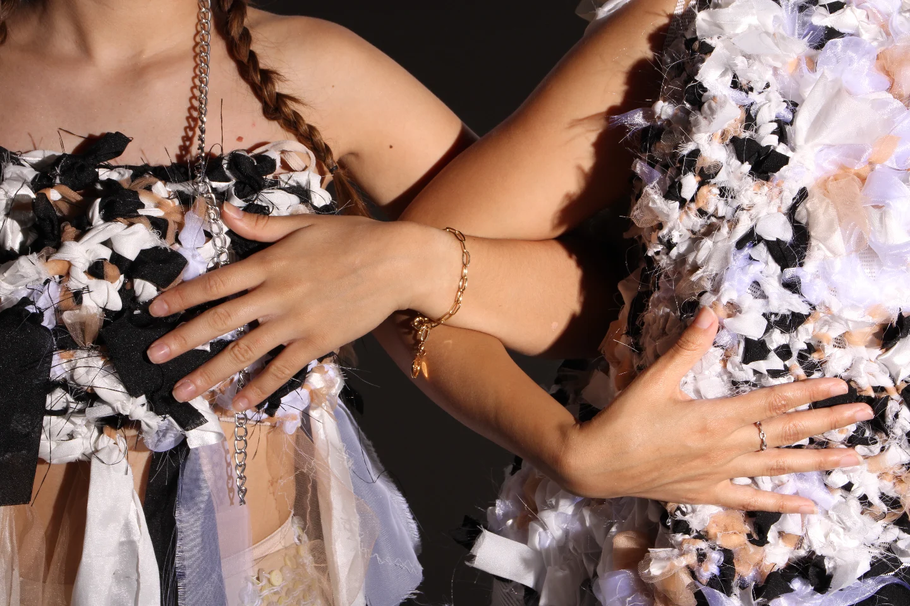
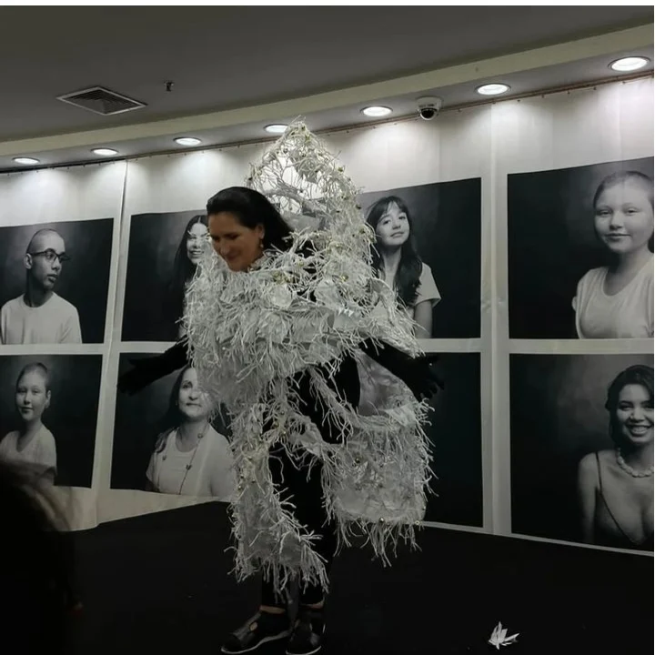
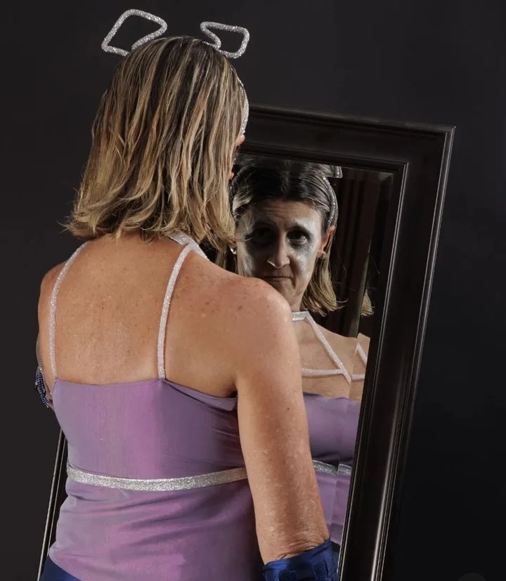
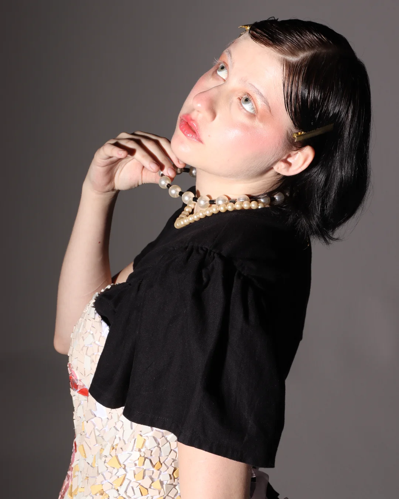
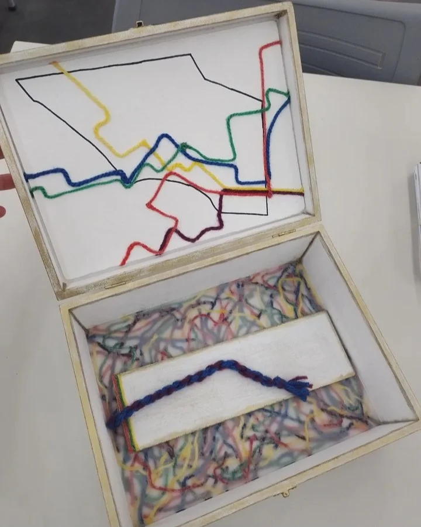
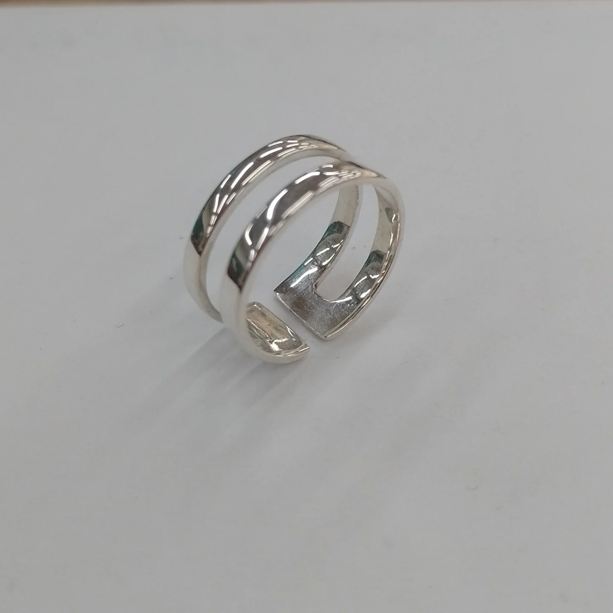

Coleções
Projetos do curso de Estilismo e alguns extras, do primeiro croqui à foto final. Cada card abre o post original.

Da Ausência à Presença
Moda como narrativa de reconexão humana: a falta de amor como ferida e o cuidado como a cicatriz que fica.

Rebel Noise
O rock dos anos 70 e 80 em jeans, entre o peso do hard rock e o brilho do glam.

Conexões
Pequenos detalhes que se enlaçam e se unem para criar formas.

Projeto ICESP
Roupas de papel com guizos que lembram o sino tocado no fim da radioterapia.

Ele me bebeu
Figurino baseado no conto de Clarice Lispector.

Editorial
Fotografia, edição e styling feitos em grupo na disciplina de Fotografia de Moda.

RevelarSP
As culturas do Bom Retiro em linhas e cores; entre os 12 melhores projetos do semestre.

Anel Paralelo
Anel em prata feito por conta própria, fora do currículo.